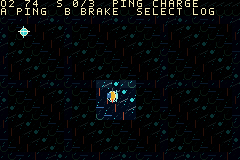
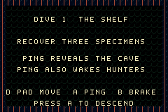
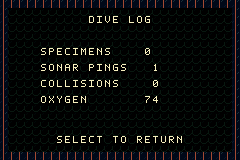
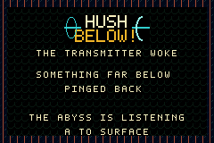
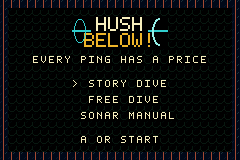

Original Game Boy Advance game · Dive log 03
HUSHBELOW!
The cave is blind until you call into it. Every answer tells the hunters exactly where to look.
- Campaign
- 3 complete dives
- Native
- 240 × 160
- Format
- GBA / HSHB

01 · THE SIGNAL
Knowledge travels
both ways.
Coast through almost-black water and preserve your location—or press A. The pulse reveals rock, living samples, and the things between you and the buoy. At that same instant, every hunter turns toward the origin.
PING / REVEALEDFRAME 04
02 · DESCENT RECORD
Three dives.
One reply.
-
I
125 M
The Shelf
Recover three luminous specimens. Learn how far a safe pulse really carries.
-
II
250 M
The Wreck
Trace three signal shards through tighter stone and restless water.
-
III
375 M
The Abyss
Wake a lost transmitter, return to the buoy, and listen to what wakes below it.



03 · PILOT CARD
No weapons.
Only judgment.
Free Dive removes the campaign clock. It does not make the water safer.
- D-PAD
- ThrustMove through four-directional cave passages.
- A
- PingReveal the cave and give every hunter a target.
- B
- BrakeKill the engines and make precise one-pixel moves.
- SELECT
- Dive logInspect specimens, pings, impacts, and oxygen.
- START
- PauseHold the dive in perfect silence.

SURFACE TRANSMISSION
The finished dive fits in your pocket.
A complete original campaign, Free Dive, deterministic 4bpp art, native PSG audio, dive reports, and an ending—built within real Game Boy Advance constraints.
Take HUSH BELOW! down